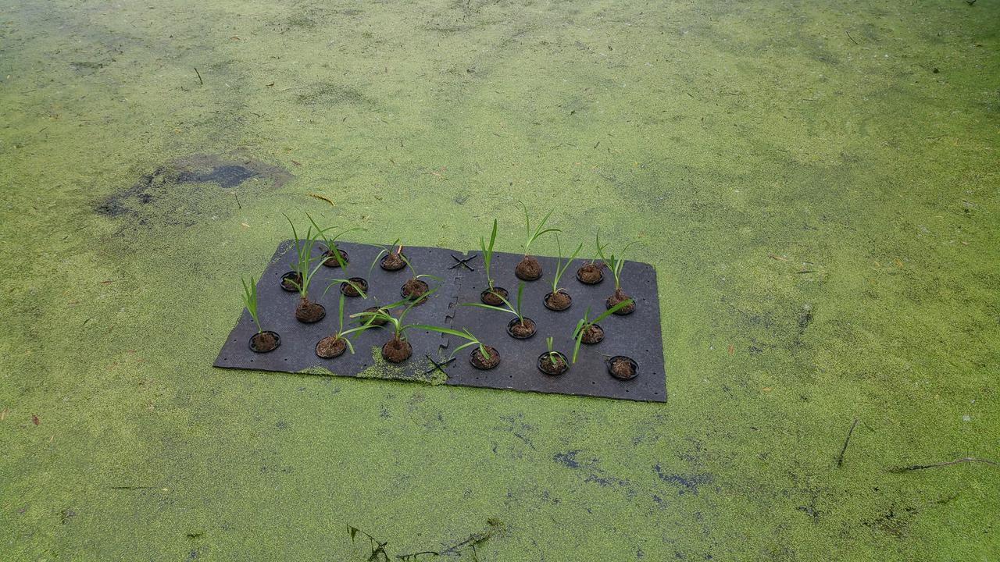

Timeline
2014
August
- 16th: Project started
October
- Plant rafts removed from pond
2015
April
- 30th- First nibbler added
2016
June
- 8th: I, Svetlana started to collect data
- 15th: Placed 20 day lilies, one without leaves (experiment) and 19 with leaves (control) in the small pond 
- 22nd: It rained as I collected data
- 28th: Threw in a nibbler


August
- 3rd: They moved the cattle further away from the big pond and started to see the Ammonia in the big pond go down to 0 ppm.
- 10th: I placed another nibbler in the small pond
- Aug 17th: It rained as I was taking the data
September
- 21st: Placed a nibbler into the small pond
- 28th It started to rain, but after data collection
October
- 22nd: Placed a nibbler into the small pond
2017
March
-
27th: Started data collection season and did an examination of the small pond. Here are the findings with photos:
- Found an oily residue near the data collecting edge/point
- There is life:
- Frogs and tadpoles
- A snapping turtle
- Traces of duckweed
- Blades of grass-like plants
May
- 8th: Duckweed is covering the whole surface of the small pond.
June
- 19th: Added a nibbler to the small pond on the deck end
- 26th: The hurricane/tropical storm before Dora's rain filled the ponds to the edges and maybe a bit more. Also in the small pond, the yarrow maybe be dieing, oberved over a month. Comfrey is still alive.
July
-
10th- Heavy downpour occured late last week with some hail.
-
17th- Heavy douwnpour occured mid last week. A nibbler was placed in the small pond in the data collection point. One of the conferies are blooming.
August
-
21st- Placed a nibbler to the small pond on the data collection side.
-
28th- It rained that week.
September
- 17th- Placed a nibbler on the dock side of the small pond. It rained last week.
October
-
16th- The rafts were removed from the small ponds. None of the orginal plants were alive but the aquatic plants took over and grew in the spots. Four plants types were found
- One with big, broad, fuzzy leaves
- Wheat-grass like plant with long, narrow leaves
- Olive-green stemmed plant with small, narrow, serrated leaves
- Ground cover-like plant with small green-reddish leaves
This could explain the raise in the average pH compared to last year.
The big pond has 10% - 20 % duckweed, ~80% has died off.
- 23rd- It rained during data collection. The big pond as ~70% duckweed.
2018
April
2nd- It snowed the night before and I wasn't able to collect data.
13th- Tested on Friday, not Monday. It rained a bit last week. The small pond has some duckweed on the edges. Also there were some small bugs found in the small pond.
16th- It snowed on the morning of collecting data and I wasn't able to collect data.
23rd- It started to rain when I started to collect the samples.
30th- There is some duckweed in the small pond.
May
14th- There is duckweed in both ponds. Also, it rained last night.
21st- It rained twice last week and the mat with the pots is placed in the pond.
28th- It stormed/rained last week.
June
4th- It rained last week.
11th- It rained last week. The big pond's water level was at the edge of the collection point.
July
9th- Added a nibbler to the dock side of the small pond.
16th- Saw two to three (non-snapping) turtles on the float in the small pond. The big pond has 95% duckweed. The data was taken in early afternoon instead of morning.
August
20th- It rained last week and it filled the ponds the collection point. Placed a nibbler on the data collection side of the small pond.
September
3rd- It rained last weekend.
10th- It rained alot to the point of the small pond overfilling abput 3 feet past the shoreline on the data collection point. Placed a nibbler on the deck side of the small pond.
16th- It rained when data collection happened. The water level in both ponds gone down a bit.
24th- It rained when data collection happened.
October
15th- It rained on the data collection morning and placed a nibbler on the deck side of the small pond.
22nd- It rained a bit last week. Removed the raft from the ponds, found nothing that grew.